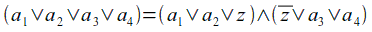

Torna alla pagina di Informatica Teorica
:: Informatica Teorica - NP-Completezza ::
Appunti & Dimostrazioni del 12 Maggio
Teorema 1 - sulla Riducibilità tempo polinomiale
Se A ≤P B e B ∈ P, allora A ∈ P
Dimostrazione
Capiamo bene le due ipotesi:
- A ≤P B, significa che avremo una funzione f che ci permetterà di fare una riduzione da A a B in tempo polinomiale;
- B ∈ P, significa che B è decidibile in un tempo polinomiale utilizzando una MdT deterministica, che chiameremo M.
La tesi del teorema ci dice che date le premesse A si troverà in P, ovvero avrà una MdT deterministica N che lo deciderà in tempo polinomiale. Scriviamola:
N = "su ingresso w:
- calcola f(w) (ovvero applica la formula di riduzione sulla stringa in ingresso);
- esegui M su f(w). Se M accetta, allora ACCETTA; altrimenti RIFIUTA."
Dato che f è una riduzione da A a B, w ∈ A se e solo se f(w) ∈ B, e quindi M accetterà f(w) se e solo se w è accettata da A. Ottenuto quello che volevamo, dobbiamo verificare che N sia risolvibile in tempo polinomiale, e lo è perché sia l'operazione di riduzione che l'esecuzione di M lo sono. La tesi è dunque verificata!
Teorema 2 - sui 3SAT
I 3cnf-formula sono formule in forma normale congiuntiva con clausole composte da 3 letterali. Una 3SAT è una 3cnf-formula soddisfacibile.
Veniamo al teorema:
3SAT è tempo polinomiale riducibile a CLIQUE.
Dimostrazione
Abbiamo davanti una formula booleana che deve essere riducibile in tempo polinomiale a una CLIQUE (un sottoinsieme di nodi di un grafo tutti connessi tra loro). Dovremo quindi convertire la 3SAT in un grafo che contenga una CLIQUE se e solo se la 3SAT è soddisfacibile.
Come costruiamo il grafo? Teniamo conto che partiamo da una formula di questo tipo:
e che vogliamo una funzione che ci generi una stringa di tipo <G,k> (dove G è il grafo e k il numero di nodi che compongono la cricca).
Come prima cosa stabiliamo che k corrisponda al numero di clausole di cui è composta Φ, e che organizzeremo i nodi del grafo in k gruppi da 3 nodi ciascuno.
Consideriamo la seguente 3SAT di esempio:
Organizziamo i nodi in k=3 gruppi da tre:
Consideriamo infine ogni coppia di nodi e li colleghiamo con un arco solo se rispettano entrambe le regole:
- non appartengono allo stesso gruppo;
- non sono tra loro complementari.
Tornando al nostro esempio, mostriamo come devono essere i collegamenti del primo nodo del gruppo in alto:
E così via.
A questo punto bisogna dimostrare che il grafo così formato abbia una k-CLIQUE se e solo se Φ è soddisfacibile. E' un "se e solo se", quindi dovremo dimostrare entrambi i sensi dell'implicazione:
(I) Φ è soddisfacibile -> k-CLIQUE
Selezioniamo da ogni clausola di Φ un letterale che sia pari a 1 (se ce ne sono diversi ne scelgo uno a caso). Dimostriamo ora (con un verificatore amichevole e alla buona) che i nodi selezionati formano effettivamente una k-CLIQUE:
V = "
- abbiamo selezionato k nodi? Sì, ne abbiamo preso uno per ognuna delle k clausole;
- questi k nodi hanno un arco che li collega? Sì, per costruzione (non avendo creato archi tra nodi complementari, se seleziono un nodo pari a 1 non potrà mai essere collegato ad uno pari a 0);
- quindi? ACCETTA."
(II) k-CLIQUE -> Φ è soddisfacibile
Si dimostra in modo complementare a (I): se assegniamo valore 1 ai nodi che formano la CLIQUE, per costruzione ce ne sarà almeno uno per clausola. Essendo la Φ una 3cnf-formula, se ha almeno un letterale uguale a 1 per clausola, allora sarà vera, quindi soddisfacibile.
NP-Completezza
Un linguaggio B è NP-Completo se soddisfa due condizioni:
- B è in NP;
- ogni A in NP è tempo polinomiale riducibile a B.
Teorema 3 - sulla NP-Completezza
Se B è NP-Completo e B ≤P C per C in NP, allora C è NP-Completo.
Dimostrazione
Per dimostrare il teorema dovremo verificare che siano vere entrambe le condizioni perché un linguaggio sia NP-Completo:
- C è in NP? Sì, ce lo dice il testo;
- ogni A in NP è ≤P C? Poiché ci è dato sapere che B è NP-Completo, sappiamo anche che ogni problema A in NP è ≤P B. Ma se A ≤P B e B ≤P C, facendo la composizione delle riduzioni tempo polinomiali avremo che anche A ≤P C.
La tesi è perciò dimostrata.
Teorema di Cook-Levin
Dimostrazione
Per dimostrare che SAT è NP-Completo dobbiamo verificare se sono soddisfatte le solite due condizioni:
- SAT è in NP? Sì, perché si può facilmente realizzare una MdT non deterministica che, dato un assegnamento per una certa Φ, lo accetta in tempo polinomiale se questo soddisfa Φ;
- ogni A in NP è ≤P SAT? E' questa la parte difficile.
Per verificare la seconda condizione bisogna costruire una riduzione tempo polinomiale per ogni linguaggio A in NP che riconduca a SAT. Cominciamo col definire una MdT non deterministica N che decide A in un tempo polinomiale, ovvero N -> nk. Introduciamo ora il cosiddetto tableau, una magnifica tabella in cui ad ogni riga corrisponde una configurazione della nostra macchina N. Le dimensioni del tableau sono nk x nk, ed è così costruito:
Dove:
- la prima e l'ultima colonna è composta di #;
- la prima riga è la configurazione iniziale di N sull'ingresso w;
- possono esserci delle celle bianche nelle ultime colonne.
Il tableau è detto accettante se una qualsiasi delle sue righe corrisponde a una configurazione accettante (contiene ovvero una qaccept). Quello che vogliamo fare è associare al tableau una formula che sarà soddisfatta se e solo se il tableau è accettante, perché significherebbe che A accetta w.
Introduciamo ora le variabili della nostra formula, che sarebbero poi tutti i possibili simboli che compariranno nel tableau. Prima di tutto definiamo l'alfabeto:
C = Q U Γ U {#}
, dove Q sono gli stati della macchina, Γ sono i simboli che possono essere sul nastro, e infine c'è il simbolo #.
Ad ogni cella sarà associata una variabile binaria xi,j,s, dove i e j sono le coordinate nel tableau, mentre s è un simbolo preso da C. In particolare, xi,j,s varrà 1 se in (i,j) c'è il simbolo s, 0 altrimenti.
Abbiamo tutto quello che ci serve per realizzare una Φ che corrisponda a un tableau accettante:
Analizziamo una per una le quattro parti in AND di cui è composta.
Φcell
Stabilisce che in ogni cella deve esserci un solo simbolo. Vediamola in formula:
, dove il primo OR dice che all'interno di ogni cella deve esserci almeno un simbolo (e infatti richiede che almeno una delle variabili sia pari a 1), mentre il secondo AND dice che in ogni cella del tableau non deve esserci più di un simbolo, e le due parti sono in AND tra loro perché devono essere ovviamente vere entrambe.
Φstart
Stabilisce che la prima riga deve corrispondere alla configurazione di partenza della MdT N. Vediamola in formula:
Φaccept
Garantisce che nel tableau ci sia almeno una configurazione accettante, ovvero che ci sia una qaccept. Vediamola in formula:
Φmove
Garantisce che ogni configurazione segua la precedente in modo legale, rispettando cioè la funzione di transizione di N. Per verificarla si ritagliano nel tableau delle finestre di dimensioni 2x3, e si dimostra che sono legali. Se tutte le finestre sono legali, allora è garantito che ogni configurazione del tableau segue in maniera corretta la precedente.
Facciamo un po' di esempi. Abbiamo due funzioni di transizione:
- δ(q1,a) =
{(q1, b, R)}
- δ(q1,b) =
{(q2, c, L), (q2, a, R)}
Consideriamo le seguenti possibili finestre:
Sono legali o no?
- (a): è legale, per la seconda δ (mi sposto a sinistra e passo a q2 dopo aver sostituito b con c);
- (b): è legale, per la seconda δ (mi sposto a destra e passo a q2 dopo aver sostituito a con a);
- (c): è legale, perché la testina è come se si spostasse di una posizione a destra rispetto alla finestra, e potrebbe benissimo stare implementando la prima δ in cui si sposta a destra e sostituisce con una b;
- (d): è legale, perché anche se non c'è la testina non sta infrangendo di fatto nessuna regola;
- (e): è legale, per la seconda δ (mi sono spostato a sinistra passando a q2);
- (f): è legale, per la seconda δ (mi sono spostato a sinistra e ho sostituito b con c);
- (g): non è legale, perché è cambiato il contenuto del nastro senza avere vicino alcuna testina;
- (h): non è legale, perché dopo q1 si sarebbe dovuti passare a q2;
- (i): non è legale, perché ci sono due testine.
Ora che abbiamo un'idea su come funziona la verifica della legalità delle finestre, vediamo come esprimere Φmove in formula:
Ricapitolando, avevamo detto che:
e quindi la Φ sarà soddisfatta se tutte le sue componenti saranno pari a 1. Ma dato che per costruzione abbiamo fatto sì che questa proprietà fosse vera, avremo che la Φ è soddisfacibile. Siamo dunque riusciti a trovare una formula per cui ogni A in NP è riducibile a SAT, quindi non rimane altro da dimostrare che questo avviene in tempo polinomiale.
Analizziamo le varie parti dell'algoritmo:
- il tableau ha dimensione nk x nk, quindi ha n2kcelle;
- in ogni cella ci sono l variabili associate. Essendo però l un valore costante che non è legato alla grandezza del tableau, possiamo trascurarlo nell'analisi della complessità;
- il numero di variabili è un O(n2k);
- Φcell, Φmove e Φaccept agiscono su tutte le celle del tableau, quindi sono un O(n2k);
- Φstart agisce solo sulla prima riga del tableau, quindi è un O(nk).
Il termine dominante è n2k, quindi l'algoritmo ha complessità O(n2k), che è tempo polinomiale. Fantastico: abbiamo dimostrato anche la seconda condizione per cui SAT è NP-Completo! Ora possiamo raccogliere le braccia da terra.
Corollario al teorema di Cook-Levin
Dimostrazione
Per dimostrare che 3SAT è NP-Completo dobbiamo verificare se sono soddisfatte le solite due condizioni:
- 3SAT è in NP? Sì dai, se SAT è in NP perché dobbiamo perdere tempo a chiederci se lo è anche 3SAT?
- ogni A in NP è ≤P 3SAT? Ideona: dato che per il teorema di Cook-Levin ogni linguaggio A in NP è riducibile a SAT in tempo polinomiale, se riusciamo a dimostrare che SAT è ≤P 3SAT siamo a cavallo!
Quello che dobbiamo fare è modificare la dimostrazione del SAT in modo che produca una formula nella forma normale congiuntiva con tre letterali per clausola (una 3SAT, appunto). Rivediamo la Φ di SAT:
Come prima cosa verifichiamo che ogni parte sia in forma normale congiuntiva (FNC):
- Φcell è un AND di sottoformule, ognuna delle quali contiene un OR di letterali e un AND di OR: quindi è in FNC!
- Φstart è un AND di letterali (tante clausole con un solo letterale): quindi è in FNC!
- Φaccept è un OR di letterali (una clausola con tanti letterali): quindi è in FNC!
- Φmove è un AND di sottoformule, ognuna delle quali contiene un OR di AND: quindi non è in FNC! Riusciamo però a rappresentarla in forma normale congiuntiva applicando la proprietà distributiva:
In questo modo si riesce a porre anche Φmove in FNC, al prezzo però di un aumento significativo delle dimensioni di ogni sottoformula. Amen.
Ora che abbiamo tutte le parti della Φ in forma normale congiuntiva non ci resta che vincolare ogni clausola ad avere al massimo 3 letterali. Studiamo i vari casi possibili e le contromisure da adottare:
- la clausola ha 3 letterali
perfetta: la lasciamo così;
- la clausola ha meno di 3 letterali
basta replicare un letterale quante volte serve per arrivare a 3, e metterlo in OR con gli altri (tanto per la proprietà di idempotenza il valore di verità non cambia);
- la clausola ha più di 3 letterali
si introduce una nuova variabile e la si utilizza in questo modo:
Ad esempio:

Dopo tutte queste modifiche, è più che semplice verificare che la nuova Φ ottenuta è soddisfacibile se e solo se la Φ originale lo è. Quindi, essendo la dimostrazione usata per il teorema di Cook-Levin più che valida anche per questo suo corollario, possiamo affermare che anche 3SAT è NP-Completo.
Torna alla pagina di Informatica Teorica